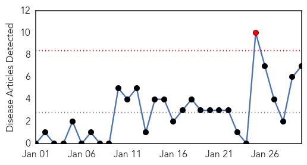
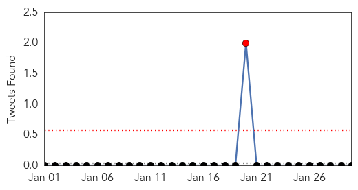

Unknown
30-Day Web Trend
0 alerts, 0 warnings

30-Day Twitter Trend
3 alerts, 0 warnings

Article Locations

Article Confidences

Top Articles:
- 0.952
- Bird Flu Spreads To 11 States …RSG Confirms Fresh Case
- 0.944
- Indiana flu deaths rise to 108 with latest state report
- 0.942
- Second bird flu case confirmed in Canada
- 0.932
- H5N1 bird flu spreads to 11 states in Nigeria
- 0.929
- Cambridge Memorial Hospital enteric outbreak leaves 7 more infected
- 0.925
- Second bird flu case confirmed in Canada
- 0.917
- Chicago Tribune
- 0.917
- Chicago Tribune
- 0.917
- Chicago Tribune
- 0.917
- Chicago Tribune
- 0.917
- Chicago Tribune
- 0.917
- Chicago Tribune
- 0.917
- Chicago Tribune
- 0.917
- Chicago Tribune
- 0.917
- Chicago Tribune
- 0.917
- Chicago Tribune
- 0.915
- Eight At Charlotte School Test Positive For Tuberculosis, Officials Say
- 0.910
- The world windows to Thailand
- 0.891
- Charlotte News
- 0.853
- 9 flu-related deaths reported in NC last week
- 0.823
- Vermont Health Department Finds Positive Results For TB
- 0.821
- Treating Sinus Infections Without Antibiotics
- 0.819
- Second Case of Bird Flu in Canada Confirmed
- 0.793
- No. of flu patients tops 2 million for 3rd week in a row ‹ Japan Today
- 0.789
- New TB Cases Confirmed in Charlotte - Story
- 0.774
- Beechwood rehab center not accepting new patients due to confirmed flu case
- 0.765
- Yemen: WHO deplores attacks on health workers and health facilities in Afghanistan, Sudan and Yemen
- 0.762
- WHO deplores attacks on health workers and health facilities in Afghanistan, Sudan and Yemen - Yemen
- 0.757
- White House urges parents to heed advice urging childhood vaccines
- 0.756
- Cervical Cancer Awareness Month - Story
- 0.741
- Vigilance called for amid global rubella surge: CDC
- 0.711
- Forecasting the Flu Better
- 0.707
- Djokovic survives 5-set thriller to set up Murray final
- 0.705
- US police confront Google over ‘cop-tracking’ app
- 0.705
- Greece warned against trying to reverse bailout deals
- 0.703
- Romney rules out run in 2016 presidential election
- 0.703
- Deadly explosion strikes Shiite mosque in Pakistan
- 0.693
- Daughter of L’Oréal heiress says artist plotted to ‘destroy’ family
- 0.691
- A Haitian Youth Orchestra: Is It a Dream?
- 0.685
- IS group crisis increases headaches for Jordan’s crown
- 0.679
- African Union backs 7,500-strong force to fight Boko Haram
- 0.615
- Zimbabwe's president Robert Mugabe, 90, becomes African Union chairman
- 0.608
- Mugabe Appointed AU Chairman As African Leaders Rebuff Warnings From Zimbabwe
- 0.604
- Gonorrhea epidemic reported in Sacramento Valley county
- 0.604
- Comité économique et social européen
- 0.587
- H7N9 bird flu case confirmed in 2nd B.C. patient
- 0.581
- Function, Location & Problems
- 0.574
- Zimbabwe's president Robert Mugabe, 90, becomes African Union chairman
- 0.568
- Norway confirms first instance of mad cow disease
- 0.539
- NYC Health Department urges flu medication use
Showing top 50 articles...
Top Tweets:
-
No tweets found for Jan 30, 2015
Dengue Fever
30-Day Web Trend
1 alerts, 0 warnings

30-Day Twitter Trend
1 alerts, 0 warnings

Article Locations
Article Confidences

Top Articles:
- 0.801
- Stringent action against quacks to continue
- 0.656
- MOFA warns against trip to dengue-affected areas
- 0.624
- Infant Becomes Latest Person to Die in Cambodia’s Mass HIV Infection
- 0.587
- Untitled Article
- 0.575
- UniMAP to develop world’s first Aedes detector – Bernama
- 0.533
- GMO mosquito plan sparks debate in Florida
- 0.509
- Biotech company to release millions of genetically modified mosquitoes in Florida
Top Tweets:
-
No tweets found for Jan 30, 2015